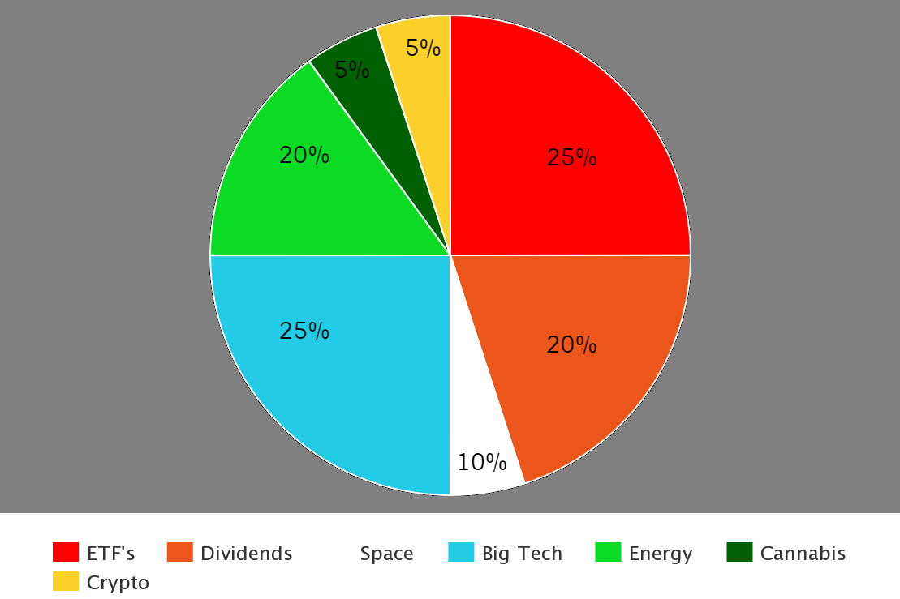

When investing 1000 dollars it is important to diversify your money into many sectors and take into consideration current political conditions, economic conditions, and personal life conditions. Be sure to have some money left over for emergencies and pay your groceries. If the climate conditions here are some key sectors to invest into:
There is not denying that big tech has had a profound effect in every single persons life. It is important to further sector up your bigtech investments into software, hardware, cybersecurity, and new and upcoming tech. The good think about tech stocks is they are quite safe since they have established themselves and can be multi-billion/trillion dollar companies. Some of these stocks even offer dividends and fast growth as well. Here is a small list of my top picks to add into your watchlist:
There are many index funds and ETF's to invest into and you can pick any as these are extremely safe options. When you invest into ETF's they use your money to invest into companies with billions of dollars that trained analysts have a lot of conviction and research into. These stocks are long term holds and offer serious over time growth. It is important to add into your initial investment. Here are my top picks to add to your watchlist for this sector:
Dividend stocks are a spectacular way to grow your account over time. The snowball method is an effective way to build wealth over time. The snowball method is reinvesting your monthly/quarterly dividend right back into the stock so over time the dividend increases and compounds. On top of this if you continue to add into these stocks dividend stocks have untapped potential to make you a millionaire. My top dividend picks are:
With the inauguration of President Biden being over 60 days ago it is important to take a look at your current stock portfolio and reasses some positions. President Biden's effort to decrease the United States greenhouse gas emissions by entering into the green new deal and Paris agreement, it would be smart to invest money into renewable energy stocks. It would also be smart to pickup stocks related to electric vehicle production and charging. Here is a list of ticker symbols to add to your Energy watchlist:
Space exploration has been said to be another rapid growing sector in the near future. Getting man to Mars nears every single day with new innovation from space companies such as SpaceX and BlueOrigin creating their own rockets. NASA has also selected candidates who will travel to Mars. Joe Biden has also made intentions to invest into this sector which could propel your stock portfolio further upwards at a rapid pace.
Due to president Biden being a democrat there is a possibility he may legalize cannabis throughout the country. This green stuff can put some big green bills into your pocket if you invest now. With this opportunity you have the chance to have fast growth, but this is risky because as of now their is no news on if full legalizations of cannabis will even happen anytime soon. This is why it is only 5% of your portfolio. Keep an eye on these stocks and add them to your watchlist:
Their is no denying that cryptocurrency has potential to be a future global currency. It is important to get a small amount of your portfolio into some crypto before this happens. These are high risk but can be extremely rewarding. Currently, big investors have just started trickling money into crypto and many billionaires have gotten in on the action as well, so you should too. Here are my top picks to add to your watchlist: